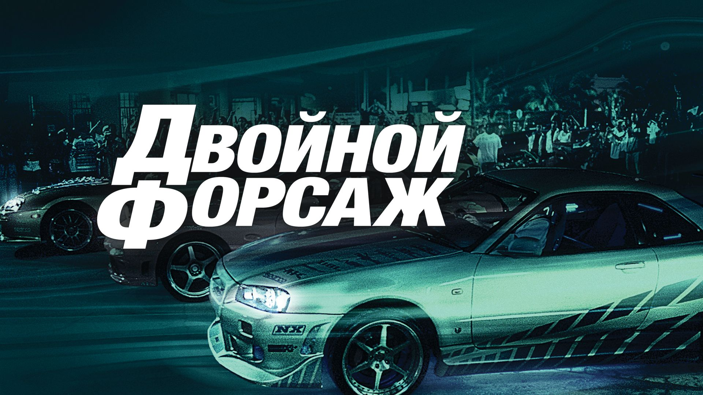

фильмы

1 часть - форсаж
1 часть-форсаж
Его зовут Брайан, и он — фанат турбин и нитроускорителей. Он пытается попасть в автобанду легендарного Доминика Торетто, чемпиона опасных и незаконных уличных гонок. Брайан также полицейский, и его задание — втереться в доверие к Торетто, подозреваемому в причастности к дерзким грабежам грузовиков, совершаемым прямо на ходу.

2 часть - двойной форсаж
2 часть-двойной форсаж
Бывший полицейский Брайан О`Коннер с напарником Романом Пирсом собирается перевезти крупную сумму грязных денег известного мафиози Картера Верона. Но на самом деле эта работа является только прикрытием для Брайана, который вместе с тайным агентом Моникой Фуэнтес должен уличить изворотливого преступника.

3 часть - форсаж токийский дрифт
3 часть-форсаж токийский дрифт
Старшеклассник Шон Босуэлл только и делает, что попадает в неприятности. После очередной выходки — импровизированных гонок и аварии — парню уже светит тюрьма, тогда мать решает отправить его к отцу в Японию. В первый же день в японской школе он знакомится с соотечественником, а тот притаскивает нового друга на подпольные соревнования по дрифт-рейсингу. Тут Шону открывается доселе невиданное искусство прохождения поворотов — и он сразу же ввязывается в спор, с позором проиграв который, оказывается должен местному авторитету по имени Хан.

4 часть - форсаж 4
4 часть - форсаж 4
Когда кривая дорожка заставляет скрывающегося от правосудия Дома Торетто вернуться в Лос-Анджелес, вражда с агентом Брайаном О’Коннером вспыхивает с новой силой. Но у парочки обнаруживается общий противник, и Дому с Брайаном приходится заключить перемирие в надежде одержать над ним победу. Грабя конвои, роя подкопы и пересекая границы, они приходят к идеальной форме отмщения — педали газа, вдавленной до упора.
5 часть - форсаж 5: быстрая пятёрка
5 часть - форсаж 5: быстрая пятёрка
Бывший полицейский Брайан О`Коннер вместе с бывалым лихачом Домиником Торетто совсем немного увлеклись жизнью вне закона. После того, как Брайан и Миа Торетто освободили Доминика, они не рискуют долго задерживаться на одном месте, так как являются желанной целью порядком недовольных копов.
6 часть - форсаж 6
6 часть - форсаж 6
После того как Доминик и Брайн побывали в Рио, где они ограбили и свергли империю вора в законе, их команда получила 100 миллионов, и наши герои оказались разбросаны по всему миру. Но их привычка вечно жить в бегах не даёт им покоя. Между тем, Хоббс отслеживал организацию смертельно опасных наёмников-водителей по двенадцати странам. Единственный способ остановить эту криминальную группу — это превзойти их на улицах, поэтому Хоббс просит Доминика собрать его элитную команду в Лондоне. За это он обещает полное помилование для Доминика и его друзей, чтобы они смогли наконец вернуться домой к своей семье.

7 часть - форсаж 7: Месть не знает границ
7 часть - форсаж 7: Месть не знает границ
Они покорили Токио и Рио, Лос-Анджелес и Лондон. Но мир больше не играет по их правилам. Зной арабских пустынь, неприлично высокие небоскребы, миллионы долларов на колесах и очень, очень знаменитый злодей. Скорость не знает границ.
8 часть - форсаж 8
8 часть - форсаж 8
Гавана, Берлин, Нью-Йорк — для самой крутой команды в мире нет ничего невозможного, пока они вместе. Но когда на их пути оказывается красотка и по совместительству королева киберпреступности Сайфер, дороги друзей расходятся.
9 часть- форсаж: Хоббс и Шоу
9 часть- форсаж: Хоббс и Шоут
Люк Хоббс — американский элитный спецагент, он любит удобную спортивную одежду, большие пикапы и здоровое питание. Декард Шоу — британский пижон, бывший сотрудник разведки, предпочитает дорогие костюмы, спортивные авто и пабы. Эти двое терпеть друг друга не могут, но если кто-то угрожает их семьям, они готовы пойти на всё. Даже на работу в команде.

10 часть - форсаж 9: вселенная форсаж
10 часть - форсаж 9: вселенная форсаж
Доминик Торетто ведет спокойную жизнь в глуши вместе с Летти и сыном Брайаном, но опасность всегда где-то рядом. Команде приходится снова собраться, чтобы спасти Мистера Никто после крушения самолёта, на котором перевозили пойманную хакершу Сайфер. На месте аварии команда обнаруживает загадочное устройство и вскоре сталкивается с опасным преступником и самым безбашенным водителем из всех, с кем они имели дело. Ситуация усложняется тем, что этот человек — брат Доминика Джейкоб, которого много лет назад изгнали из семьи.